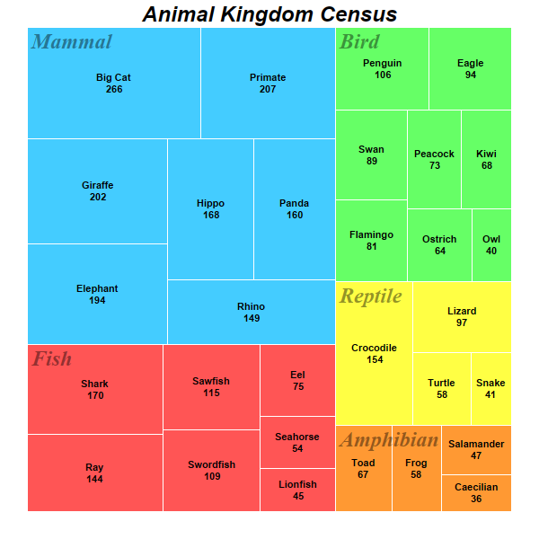

This example demonstrates a multi-level tree map.
The code in this example is similar to that of the
Simple Tree Map, with the following changes:
- Data are added to the root node with TreeMapNode.setData to produce child nodes. Data are then added to the child nodes to produce second level of child nodes.
- As there are two levels of child nodes, there are two child node prototypes, one for each level, for configuring their styles.
The following is the command line version of the code in "cppdemo/multileveltreemap". The MFC version of the code is in "mfcdemo/mfcdemo". The Qt Widgets version of the code is in "qtdemo/qtdemo". The QML/Qt Quick version of the code is in "qmldemo/qmldemo".
#include "chartdir.h"
int main(int argc, char *argv[])
{
// The first level nodes of the tree map. There are 5 nodes.
const char* animals[] = {"Fish", "Amphibian", "Reptile", "Bird", "Mammal"};
const int animals_size = (int)(sizeof(animals)/sizeof(*animals));
// In this example, the colors are based on the first level nodes.
int colors[] = {0xff5555, 0xff9933, 0xffff44, 0x66ff66, 0x44ccff};
const int colors_size = (int)(sizeof(colors)/sizeof(*colors));
// Data for the second level nodes in "Fish"
const char* fish_names[] = {"Shark", "Ray", "Swordfish", "Sawfish", "Eel", "Lionfish",
"Seahorse"};
const int fish_names_size = (int)(sizeof(fish_names)/sizeof(*fish_names));
double fish_data[] = {170, 144, 109, 115, 75, 45, 54};
const int fish_data_size = (int)(sizeof(fish_data)/sizeof(*fish_data));
// Data for the second level nodes in "Bird"
const char* bird_names[] = {"Swan", "Ostrich", "Eagle", "Penguin", "Kiwi", "Flamingo", "Owl",
"Peacock"};
const int bird_names_size = (int)(sizeof(bird_names)/sizeof(*bird_names));
double bird_data[] = {89, 64, 94, 106, 68, 81, 40, 73};
const int bird_data_size = (int)(sizeof(bird_data)/sizeof(*bird_data));
// Data for the second level nodes in "Amphibian"
const char* amphibian_names[] = {"Toad", "Salamander", "Frog", "Caecilian"};
const int amphibian_names_size = (int)(sizeof(amphibian_names)/sizeof(*amphibian_names));
double amphibian_data[] = {67, 47, 58, 36};
const int amphibian_data_size = (int)(sizeof(amphibian_data)/sizeof(*amphibian_data));
// Data for the second level nodes in "Reptile"
const char* reptile_names[] = {"Turtle", "Crocodile", "Lizard", "Snake"};
const int reptile_names_size = (int)(sizeof(reptile_names)/sizeof(*reptile_names));
double reptile_data[] = {58, 154, 97, 41};
const int reptile_data_size = (int)(sizeof(reptile_data)/sizeof(*reptile_data));
// Data for the second level nodes in "Mammal"
const char* mammal_names[] = {"Big Cat", "Primate", "Panda", "Elephant", "Hippo", "Rhino",
"Giraffe"};
const int mammal_names_size = (int)(sizeof(mammal_names)/sizeof(*mammal_names));
double mammal_data[] = {266, 207, 160, 194, 168, 149, 202};
const int mammal_data_size = (int)(sizeof(mammal_data)/sizeof(*mammal_data));
// Create a Tree Map object of size 600 x 600 pixels
TreeMapChart* c = new TreeMapChart(600, 600);
// Add a title to the chart
c->addTitle("Animal Kingdom Census", "Arial Bold Italic", 18);
// Set the plotarea at (30, 30) and of size 540 x 540 pixels
c->setPlotArea(30, 30, 540, 540);
// Obtain the root of the tree map, which is the entire plot area
TreeMapNode* root = c->getRootNode();
// Add first level nodes to the root. We do not need to provide data as they will be computed as
// the sum of the second level nodes.
root->setData(DoubleArray(), StringArray(animals, animals_size), IntArray(colors, colors_size));
// Add second level nodes to each of the first level node
root->getNode(0)->setData(DoubleArray(fish_data, fish_data_size), StringArray(fish_names,
fish_names_size));
root->getNode(1)->setData(DoubleArray(amphibian_data, amphibian_data_size), StringArray(
amphibian_names, amphibian_names_size));
root->getNode(2)->setData(DoubleArray(reptile_data, reptile_data_size), StringArray(
reptile_names, reptile_names_size));
root->getNode(3)->setData(DoubleArray(bird_data, bird_data_size), StringArray(bird_names,
bird_names_size));
root->getNode(4)->setData(DoubleArray(mammal_data, mammal_data_size), StringArray(mammal_names,
mammal_names_size));
// Get the prototype (template) for the first level nodes.
TreeMapNode* nodeConfig = c->getLevelPrototype(1);
// Set the label format for the nodes to show the label with 8pt Arial Bold font in
// semi-transparent black color (0x77000000). Put the text at the top left corner of the cell.
nodeConfig->setLabelFormat("{label}", "Times New Roman Bold Italic", 18, 0x77000000,
Chart::TopLeft);
// Set the border color to white (ffffff)
nodeConfig->setColors(-1, 0xffffff);
// Get the prototype (template) for the second level nodes.
TreeMapNode* nodeConfig2 = c->getLevelPrototype(2);
// Set the label format for the nodes to show the label and value with 8pt Arial Bold font. Put
// the text at the center of the cell.
nodeConfig2->setLabelFormat("{label}<*br*>{value}", "Arial Bold", 8, Chart::TextColor,
Chart::Center);
// Set the border color to white (ffffff)
nodeConfig2->setColors(-1, 0xffffff);
// Output the chart
c->makeChart("multileveltreemap.png");
//free up resources
delete c;
return 0;
}
© 2023 Advanced Software Engineering Limited. All rights reserved.